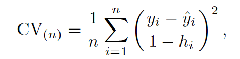
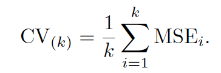
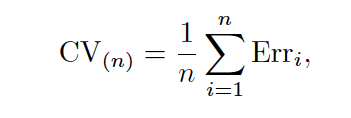
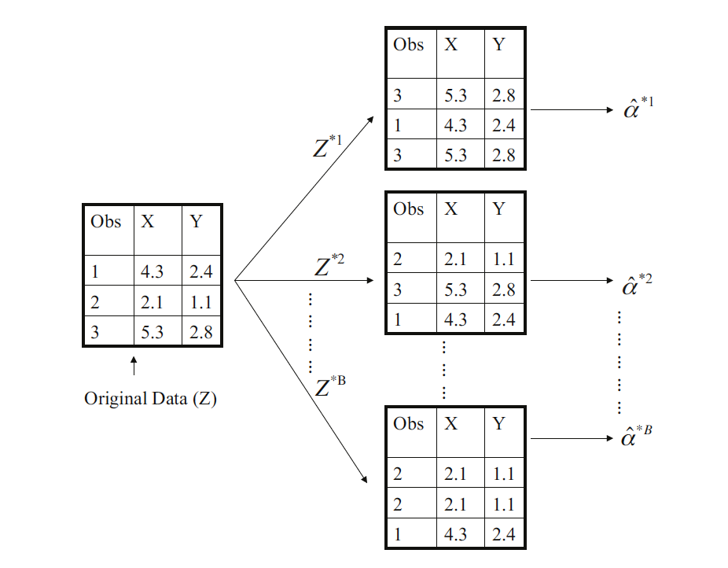
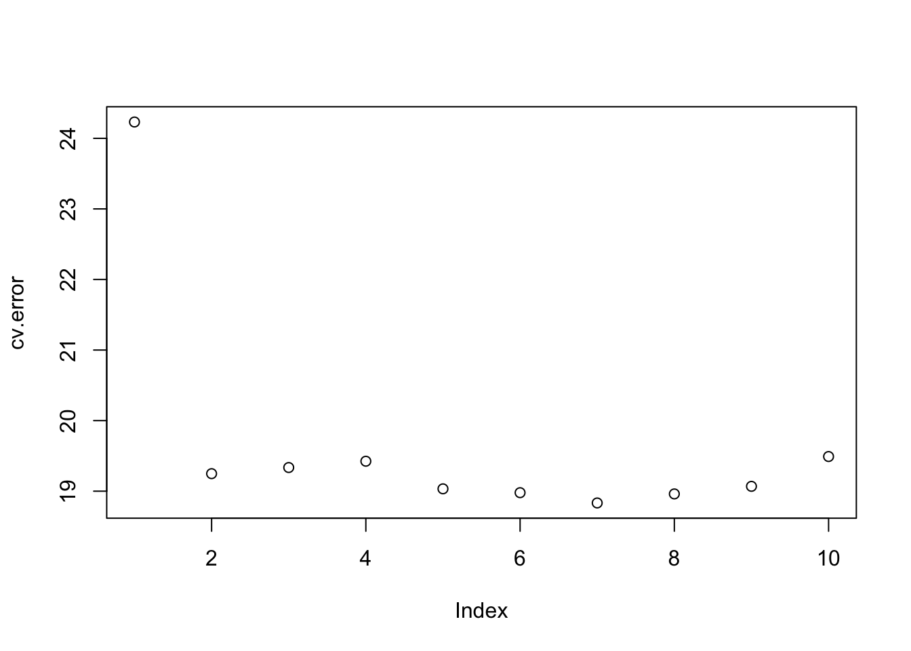
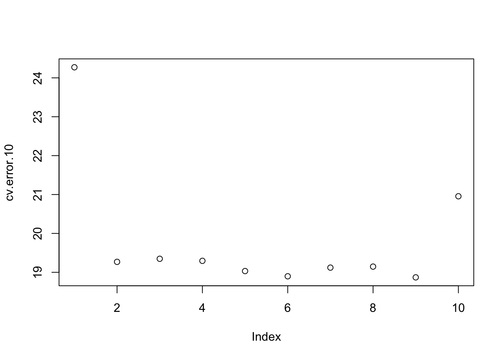

library(ISLR2)
set.seed(1)
train = sample(392, 196)Chapter 5: Resampling Methods
Resampling Methods
- cross-validation
- bootstrap
Cross-validation
The Validation Set Approach
Split data into the following two sets
a training set
a validation set (hold-out set)
We can estimate the test error rate from the validation set error rate, which can be highly variable.
Leave-One-Out Cross-Validation (LOOCV)
LOOCV addresses the high variability of the validation set approach.
With least squares linear or polynomial regression, the cost of LOOCV is the same as that of a single model.

k-Fold Cross-Validation
It randomly divides the set of observations into k groups.

LOOCV is the special case of k-fold CV in which k is set to equal n.
k-fold CV with k < n has a computational advantage to LOOCV.
LOOCV reduces more bias than k-fold CV.
LOOCV has higher variance than k-fold CV.
- each of n models is trained on an almost identical set of observations.
k-fold CV often gives more accurate estimates of the test error rate than LOOCV.
So typically, k = 5 or k = 10 tends to yield more accurate test error rate estimates.
Cross-Validation on Classification Problems

\[Err_i = I(y_i \neq \hat{y_i})\]
The Bootstrap
it is used to quantify the uncertainty associated with a given estimator.
E.g., the bootstrap can be used to estimate the standard errors of the coefficients.

Lab
The Validation Set Approach
Simple Linear Regression Model:
lm.fit = lm(mpg ~ horsepower, data = Auto, subset = train)attach(Auto)
mean((mpg - predict(lm.fit, Auto))[-train]^2) # the estimated test MSE[1] 23.26601polynomial regression models:
lm.fit2 = lm(mpg ~ poly(horsepower, 2), data = Auto, subset = train)
mean((mpg - predict(lm.fit2, Auto))[-train]^2) # the estimated test MSE[1] 18.71646lm.fit3 = lm(mpg ~ poly(horsepower, 3), data = Auto, subset = train)
mean((mpg - predict(lm.fit3, Auto))[-train]^2) # the estimated test MSE[1] 18.79401We prefer the quadratic regression model based on the validation MSE.
LOOCV
glm.fit = glm(mpg ~ horsepower, data = Auto)
coef(glm.fit)(Intercept) horsepower
39.9358610 -0.1578447 library(boot)
cv.err = cv.glm(Auto, glm.fit)
cv.err$delta # [1]: the standard k-fold CV estimate, [2]: a bias-corrected version[1] 24.23151 24.23114cv.error = rep(0, 10)
for(i in 1:10){
glm.fit = glm(mpg ~ poly(horsepower, i), data = Auto)
cv.error[i] = cv.glm(Auto, glm.fit)$delta[1]
}
cv.error [1] 24.23151 19.24821 19.33498 19.42443 19.03321 18.97864 18.83305 18.96115
[9] 19.06863 19.49093plot(cv.error)
We see a sharp drop in the estimated test MSE between the linear and quadratic fits, while not from higher-order polynomials.
k-Fold Cross Validation
set.seed(17)
cv.error.10 = rep(0, 10)
for (i in 1:10) {
glm.fit = glm(mpg ~ poly(horsepower, i), data = Auto)
cv.error.10[i] = cv.glm(Auto, glm.fit, K = 10)$delta[1]
}
cv.error.10 [1] 24.27207 19.26909 19.34805 19.29496 19.03198 18.89781 19.12061 19.14666
[9] 18.87013 20.95520plot(cv.error.10)
Higher-order polynomials than quadratic does not show improvement of test MSE.
The Bootstrap
head(Portfolio) X Y
1 -0.8952509 -0.2349235
2 -1.5624543 -0.8851760
3 -0.4170899 0.2718880
4 1.0443557 -0.7341975
5 -0.3155684 0.8419834
6 -1.7371238 -2.0371910alpha.fn = function(data, index){
X = data$X[index]
Y = data$Y[index]
(var(Y) - cov(X, Y) / (var(X) + var(Y) - 2 * cov(X, Y)))
}alpha.fn(Portfolio, 1:100)[1] 0.7792916set.seed(7)
alpha.fn(Portfolio, sample(100, 100, replace = T))[1] 0.9142495boot(Portfolio, alpha.fn, R = 1000)
ORDINARY NONPARAMETRIC BOOTSTRAP
Call:
boot(data = Portfolio, statistic = alpha.fn, R = 1000)
Bootstrap Statistics :
original bias std. error
t1* 0.7792916 -0.02651568 0.1723508boot.fn = function(data, index){
coef(lm(mpg ~ horsepower, data= data, subset = index))
}boot.fn(Auto, 1:392)(Intercept) horsepower
39.9358610 -0.1578447 set.seed(1)
boot.fn(Auto, sample(392, 392, replace = T))(Intercept) horsepower
40.3404517 -0.1634868 boot(Auto, boot.fn, 1000)
ORDINARY NONPARAMETRIC BOOTSTRAP
Call:
boot(data = Auto, statistic = boot.fn, R = 1000)
Bootstrap Statistics :
original bias std. error
t1* 39.9358610 0.0549915227 0.841925746
t2* -0.1578447 -0.0006210818 0.007348956summary(lm(mpg ~ horsepower , data = Auto))$coef Estimate Std. Error t value Pr(>|t|)
(Intercept) 39.9358610 0.717498656 55.65984 1.220362e-187
horsepower -0.1578447 0.006445501 -24.48914 7.031989e-81boot.fn2 = function(data, index){
coef(lm(mpg ~ horsepower + I(horsepower^2), data= data, subset = index))
}set.seed(1)
boot(Auto, boot.fn2, 1000)
ORDINARY NONPARAMETRIC BOOTSTRAP
Call:
boot(data = Auto, statistic = boot.fn2, R = 1000)
Bootstrap Statistics :
original bias std. error
t1* 56.900099702 3.511640e-02 2.0300222526
t2* -0.466189630 -7.080834e-04 0.0324241984
t3* 0.001230536 2.840324e-06 0.0001172164summary(lm(mpg ~ horsepower + I(horsepower^2), data = Auto))
Call:
lm(formula = mpg ~ horsepower + I(horsepower^2), data = Auto)
Residuals:
Min 1Q Median 3Q Max
-14.7135 -2.5943 -0.0859 2.2868 15.8961
Coefficients:
Estimate Std. Error t value Pr(>|t|)
(Intercept) 56.9000997 1.8004268 31.60 <2e-16 ***
horsepower -0.4661896 0.0311246 -14.98 <2e-16 ***
I(horsepower^2) 0.0012305 0.0001221 10.08 <2e-16 ***
---
Signif. codes: 0 '***' 0.001 '**' 0.01 '*' 0.05 '.' 0.1 ' ' 1
Residual standard error: 4.374 on 389 degrees of freedom
Multiple R-squared: 0.6876, Adjusted R-squared: 0.686
F-statistic: 428 on 2 and 389 DF, p-value: < 2.2e-16